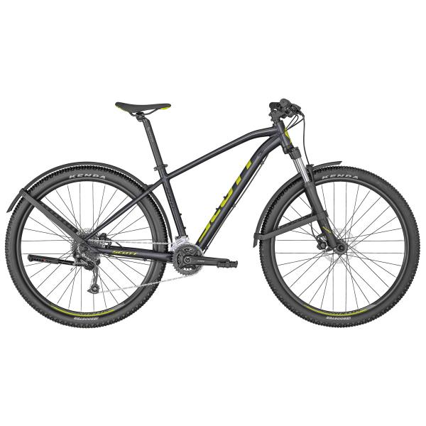

La SCOTT Aspect 950 es una bicicleta de montaña rígida sin suspensión trasera, diseñada para ser ligera, eficaz y con un precio razonable. Los frenos son de disco y los componentes de Syncros. Es el modelo perfecto para principiantes o para usuarios de bicicleta de montaña que se guíen por el presupuesto.
- Cuadro:
Cuadro de aleación Aspect 700/900 - Sillín:
Syncros 3.0 - Manillar:
Syncros 3.0 / 720mm black / 31.8mm / 12mm rise / 9° BS / Syncros Pro Grip - Puños:
Bontrager XR Trail Pro, con bloqueo, aluminio - Freno:
Frenos de disco hidráulicos Tektro - Peso:
14.9 (con tubos / sin pedales)